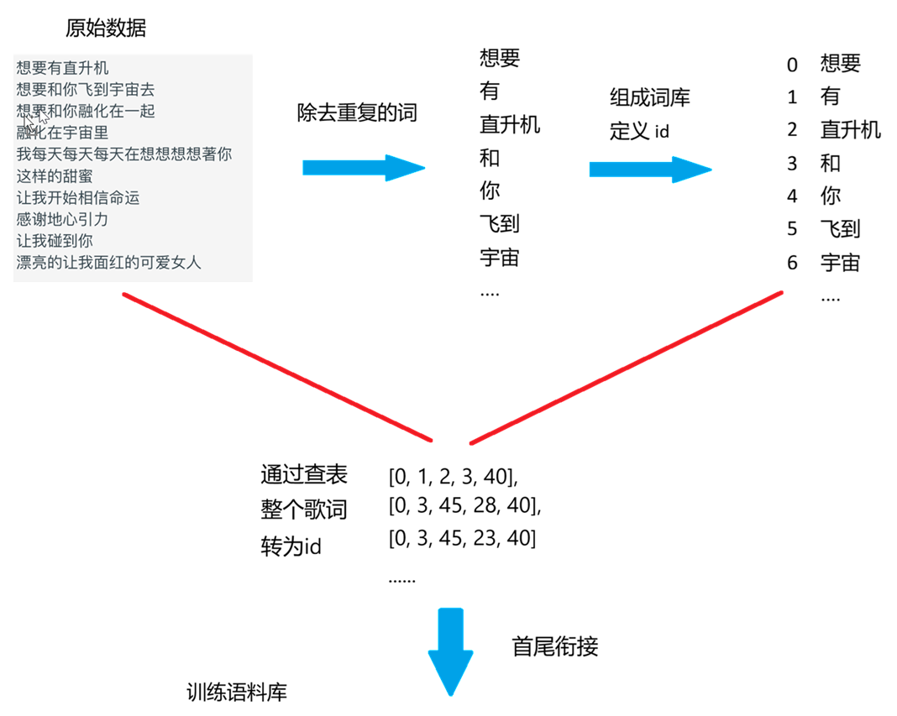
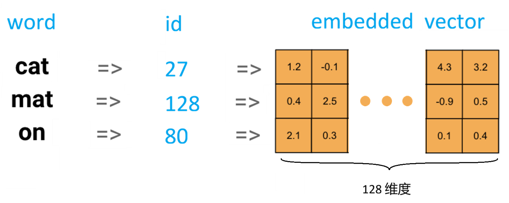
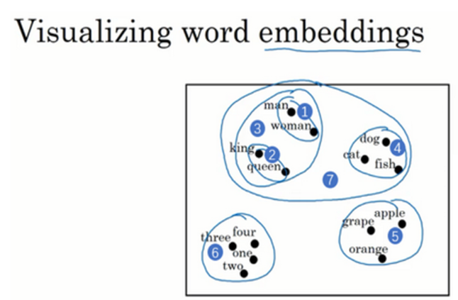
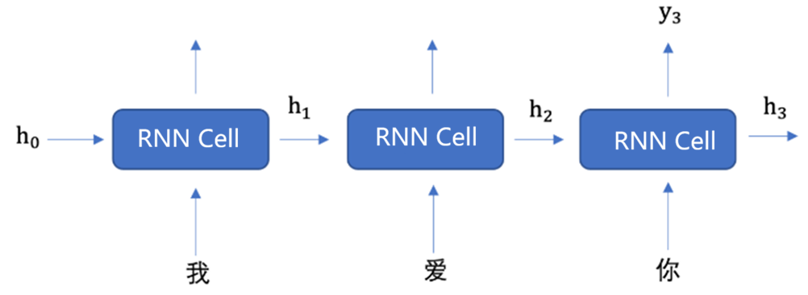
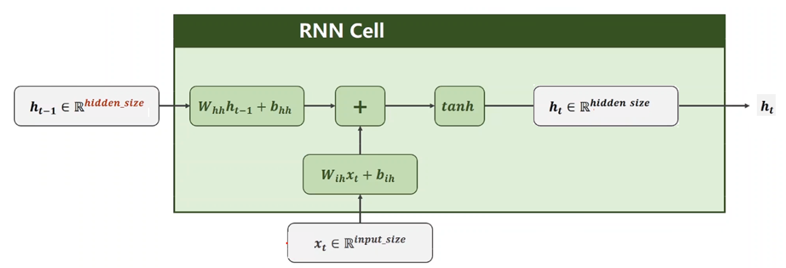
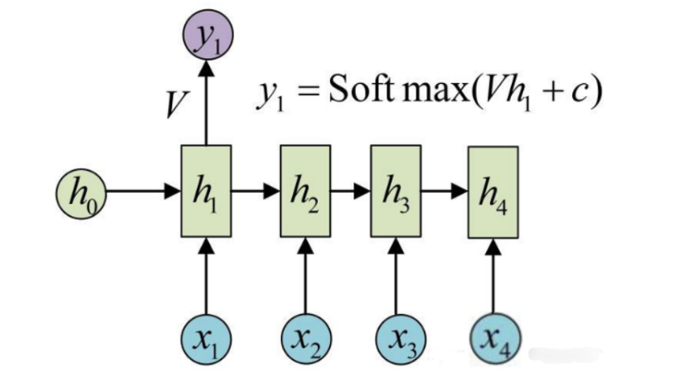
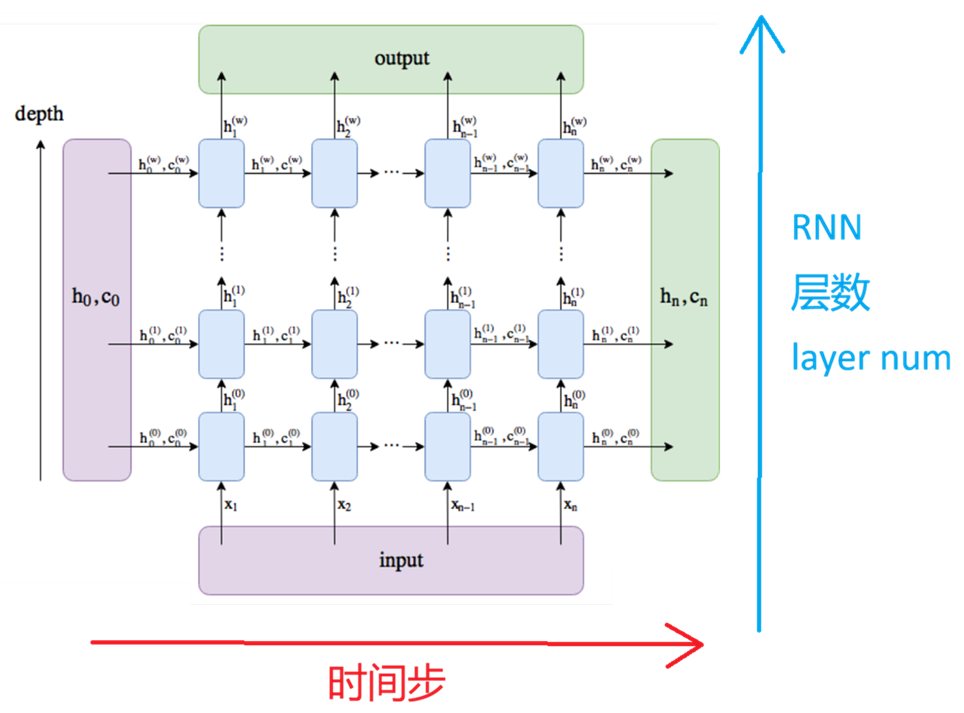
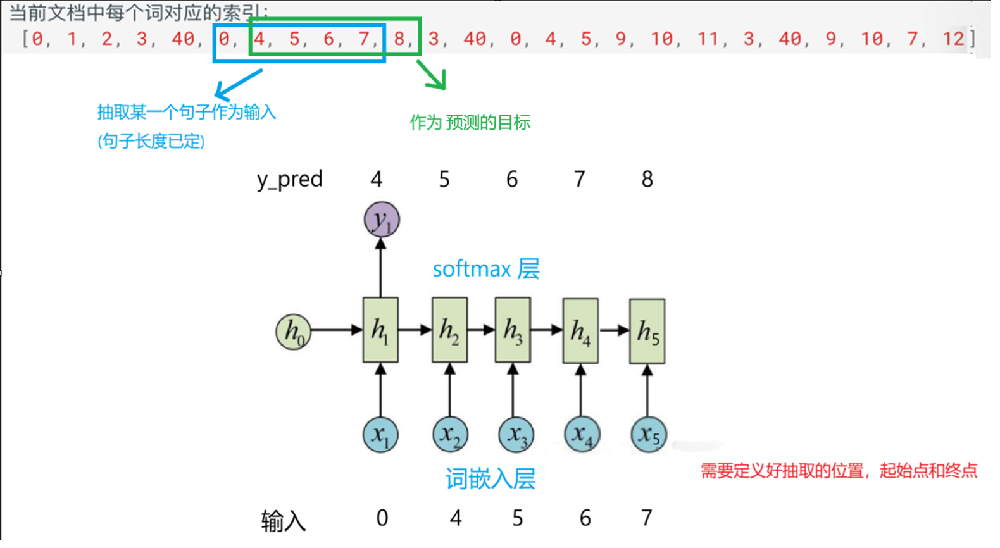

这一讲把“文字怎样进入神经网络、序列历史怎样被保存、模型怎样逐词生成文本”串成一条完整因果链：文本先经过清洗、分词和词表映射变成整数索引；词嵌入层把离散索引映射成稠密向量；RNN 在每个时间步用当前输入和上一时刻隐藏状态更新记忆；线性输出层把隐藏状态投影成词表上的 logits；交叉熵、时间反向传播和优化器共同学习嵌入、循环权重与输出权重。
学完后，你应该能独立回答这些问题：
- 什么是序列数据？它与普通独立样本的关键区别是什么？
- NLP 管线为什么需要分词、词表和词嵌入？
- One-hot、整数索引和稠密词向量分别扮演什么角色？
nn.Embedding的输入、权重和输出形状怎样计算？- 普通 RNN 的隐藏状态如何更新？循环结构为什么能够携带上下文？
output与h_n有什么区别？seq_len、batch、input_size、hidden_size和num_layers分别表示什么？- 序列到序列、序列到单值和自回归生成任务怎样选取输出？
- 为什么普通 RNN 容易出现长期依赖、梯度消失和梯度爆炸？
- 怎样把语料、词表、滑动窗口 Dataset、模型、训练、保存和生成连成一个可靠闭环？
- 文本生成时，贪心、温度采样和 Top-k 采样有什么差别？
- 课件示例代码中哪些写法只适合演示，怎样改成可复现、可扩展的实现？
一、先认识序列数据与 NLP
1. 序列数据的核心是“顺序有信息”
序列数据由按某种顺序排列的元素组成。这个顺序不一定是钟表时间，也可以是词序、音频采样顺序、视频帧顺序或事件发生顺序。
- 文本：词语前后关系会改变语义，例如“我爱你”和“你爱我”包含相同的词，但含义不同；
- 时间序列：股票价格、气温、传感器读数会随时间演化；
- 语音：当前音素的解释依赖前后声学片段；
- 视频：动作只能通过连续帧之间的变化来识别；
- 音乐：节奏、旋律与和声都具有跨时间依赖。
普通前馈网络通常把每个输入当作彼此独立的固定长度样本；RNN 则显式保存一个随时间更新的隐藏状态，让当前计算能够使用过去的信息。
2. RNN 的典型应用
课件列出的应用可以统一理解为“从一个序列预测另一个对象”：
| 应用 | 输入 | 输出 |
|---|---|---|
| 语言模型 / 文本生成 | 已出现的词序列 | 下一个词或后续文本 |
| 情感分析 | 一段文本 | 正面、负面等标签 |
| 机器翻译 | 源语言序列 | 目标语言序列 |
| 语音识别 | 声学特征序列 | 文字序列 |
| 时间序列预测 | 历史数值 | 未来数值 |
| 音乐生成 | 已有音符序列 | 后续音符 |
RNN、LSTM/GRU、Transformer 和 Mamba 不是简单的“后一种彻底淘汰前一种”。更准确的关系是：
- 普通 RNN 结构简单，但长期记忆能力有限；
- LSTM 和 GRU 通过门控机制缓解长期依赖问题；
- Transformer 用注意力直接建立远距离联系，并能高度并行训练；
- Mamba 等状态空间模型尝试以近线性序列复杂度处理长序列；
- 在小数据、在线流式推理、低延迟或教学场景中，RNN/LSTM 仍然有价值。
“LSTM 不会遗忘”并不严谨。LSTM 学习的是何时保留、更新或忘记信息，只是比普通 RNN 更擅长控制记忆。
3. 自然语言处理的基本管线
NLP 是 Natural Language Processing，即让计算机分析、理解或生成自然语言。文字不能直接送入神经网络，常见管线是：
原始文本 → 清洗与规范化 → 分词 / 子词切分 → 构建词表并映射为整数索引 → 词嵌入 → 序列模型 → 分类、标注、翻译或生成结果
清洗和分词规则必须与训练时一致。实际系统还要处理未知词、填充符号、句子边界和批次内不同长度序列。
经过数值化和序列建模后，可以继续完成主题建模、情感判断、文本分类、命名实体抽取、翻译与文本生成等任务。不是所有 NLP 任务都必须使用 RNN，但它提供了理解序列建模最直接的起点。
二、分词、词表与整数索引
1. 三种对象不要混淆
假设文本是“我爱自然语言处理”：
- Token（词元）：分词后得到的单位，如“我”“爱”“自然语言处理”；
- Vocabulary（词表）：token 与整数 ID 的双向映射；
- Corpus IDs（语料索引序列）：把整篇语料按词表替换成 ID 后得到的整数序列。
神经网络接收的是整数 ID，而不是汉字字符串。常见映射为：
token: 我 爱 自然语言处理 id: 12 7 35
2. 中文分词示例
import jieba text = "北京冬奥的赛程已经过半。" tokens = jieba.lcut(text) print(tokens)
分词结果不是唯一真理。词级切分容易遇到未登录词和词表膨胀；现代大语言模型更常用 BPE、WordPiece 或 SentencePiece 等子词方法。课件项目采用 jieba 词级分词，是为了让流程更直观。
3. 词表必须可复现
直接使用 list(set(tokens)) 会打乱顺序，不同运行之间的 ID 可能变化。模型参数与词表 ID 一一对应，一旦映射改变，已保存模型就失效。可以用字典保持首次出现顺序：
SPECIAL_TOKENS = ["<pad>", "<unk>"] def build_ordered_vocab(tokens): index_to_token = SPECIAL_TOKENS + list(dict.fromkeys(tokens)) token_to_index = { token: index for index, token in enumerate(index_to_token) } return index_to_token, token_to_index
两个特殊 token 的作用：
<pad>：把不同长度序列补齐成同一批次；<unk>：表示词表中没有出现的 token。
更完整的系统还会加入 <bos>、<eos>，分别表示序列开始和结束。
4. 课件中的词表构建流程

课件将每行歌词分词，再把词映射为 ID，并在行与行之间插入空格。这个方法保留了基本项目流程，但工程上最好显式使用 <eos> 表示句子边界，而不是让普通空格同时承担词元与边界两种语义。
三、词嵌入：把离散 ID 变成可学习向量
1. 为什么不能直接把 ID 当连续数值
若“猫”的 ID 是 27，“狗”的 ID 是 28，并不意味着狗比猫“大 1”，也不意味着两者比 ID 为 900 的“汽车”更相似。ID 只是查表地址，不具有大小和距离含义。
One-hot 可以无歧义地表示类别：词表大小为 $V$ 时，每个词用 $V$ 维向量表示，只有对应位置为 1。但它有两个问题：
- 维度等于词表大小，通常非常高；
- 任意两个不同词的 One-hot 都正交，不能表达语义相似性。
词嵌入把每个 token 映射为 $E$ 维稠密向量，通常 $E \ll V$。嵌入矩阵为：
$$ W_{\mathrm{emb}}\in\mathbb{R}^{V\times E} $$
输入 ID $i$ 时，嵌入层返回第 $i$ 行：
$$ e_i=W_{\mathrm{emb}}[i] $$
从线性代数角度看，这等价于用 One-hot 向量左乘嵌入矩阵，但实现时直接查表更高效。

2. 嵌入向量学到的不是人工命名属性
课件用“语义、词性、褒贬义、流行度”等 128 个特征帮助理解嵌入。这个类比有助于建立直觉，但实际模型的每一维通常没有可直接命名的独立含义。语义信息分布在整个向量空间中，由训练目标共同塑造。
在合适的训练下，共现环境相似的词会得到较近的向量。常用余弦相似度：
$$ \operatorname{cos}(u,v) = \frac{u^\top v}{\lVert u\rVert_2\lVert v\rVert_2} $$
值越接近 1，方向越相似；接近 0 表示近似无关；接近 -1 表示方向相反。低维图只是高维嵌入经过降维后的近似投影：

3. PyTorch 的 nn.Embedding
import torch from torch import nn embedding = nn.Embedding( num_embeddings=10, # 词表大小 V embedding_dim=4, # 每个词向量维度 E padding_idx=0, # ID 0 作为 padding，不更新这一行 ) token_ids = torch.tensor([ [1, 4, 7], [2, 3, 0], ], dtype=torch.long) vectors = embedding(token_ids) print(embedding.weight.shape) # [10, 4] print(vectors.shape) # [2, 3, 4]
形状规律非常稳定：
$$ [B,T]\xrightarrow{\mathrm{Embedding}}[B,T,E] $$
输入必须是整数索引张量，通常为 torch.long。nn.Embedding 的权重默认随机初始化并参与梯度更新。
4. 预训练、冻结与微调
嵌入可以：
- 随任务模型一起从随机值开始训练；
- 加载 Word2Vec、GloVe 等预训练词向量；
- 先冻结，待其他层稳定后再解冻；
- 全程微调，使嵌入适应当前任务。
pretrained = torch.randn(10, 4) embedding = nn.Embedding.from_pretrained( pretrained, freeze=False, # False 表示继续微调 padding_idx=0, )
预训练词表必须与当前 ID 映射对齐，否则“某个 ID 对应哪一行向量”会错位。
四、RNN 的循环结构与隐藏状态
1. 同一个 Cell 在时间轴上重复使用
课件展开图中画出多个 RNN Cell，是为了表示多个时间步；它们并不是互不相关的多个网络，而是同一个循环计算使用同一组参数反复执行。

在时间步 $t$：
- 当前输入为 $x_t$；
- 上一时刻记忆为 $h_{t-1}$；
- 更新后的当前记忆为 $h_t$；
- 任务需要时，再由 $h_t$ 计算输出 $y_t$。
初始隐藏状态 $h_0$ 常设为全 0，也可以是可学习参数或由另一个网络产生。
2. 隐藏状态更新公式
PyTorch 普通 tanh RNN 的单层、单方向更新可以写成：
$$ h_t = \tanh\left( W_{ih}x_t+b_{ih} +W_{hh}h_{t-1}+b_{hh} \right) $$
其中：
- $x_t\in\mathbb{R}^{I}$，$I$ 是
input_size； - $h_t\in\mathbb{R}^{H}$，$H$ 是
hidden_size； - $W_{ih}\in\mathbb{R}^{H\times I}$；
- $W_{hh}\in\mathbb{R}^{H\times H}$；
- 两个偏置均在 $\mathbb{R}^{H}$ 中。

也可以先拼接输入与旧状态：
$$ h_t = \tanh\left( W_{\mathrm{combined}} [h_{t-1};x_t]+b \right) $$
这与两个线性变换相加在数学上等价，因为：
$$ W_{\mathrm{combined}}=[W_{hh},W_{ih}] $$
PyTorch 内部保留分开的 weight_ih 与 weight_hh，便于实现和优化。
3. RNN 层不等于最终预测层
RNN Cell 的职责是更新隐藏状态。若要预测词表中的下一个词，还需额外的线性层：
$$ z_t=W_{hy}h_t+b_y $$
$z_t\in\mathbb{R}^{V}$ 是词表上每个词的 raw logits。概率为：
$$ p(y_t=j\mid x_{\le t}) = \operatorname{softmax}(z_t)_j $$
训练时把 logits 直接交给 CrossEntropyLoss，不要在模型中预先做 Softmax，因为该损失内部已经使用数值稳定的 LogSoftmax。

4. 参数共享与参数量
所有时间步共享同一组 $W_{ih}$、$W_{hh}$ 和偏置，因此序列变长不会增加 RNN 参数量，只会增加计算次数和中间状态。
对单层、单方向、带偏置的 PyTorch RNN：
$$ N_{\mathrm{RNN}} = HI+H^2+2H $$
嵌入层参数量为 $VE$，输出线性层参数量为 $VH+V$。大词表任务中，嵌入层和输出层往往占据大量参数。
五、怎样从隐藏状态得到不同任务的答案
1. 序列到单值
情感分析、视频分类等任务输入完整序列，只输出一个标签。常见做法：
- 取最后一个有效时间步的隐藏状态；
- 对所有有效时间步做平均或最大池化；
- 使用注意力对时间步加权汇总。
变长序列使用 padding 时，“最后一个张量位置”可能只是填充，必须按真实长度取最后有效状态。
2. 序列到序列
词性标注、序列标注和逐帧预测需要每个时间步的输出。模型会把整个 output 送入任务头。
机器翻译也是序列到序列，但源序列和目标序列长度可以不同，经典做法是编码器—解码器；现代系统通常使用带注意力的 Transformer。
3. 自回归文本生成
文本生成在第 $t$ 步预测下一个 token：
$$ p(x_{t+1}\mid x_1,\ldots,x_t) $$
训练时通常把真实序列右移一位作为目标：
输入 x: 我 想 要 一 架 目标 y: 想 要 一 架 飞机
推理时没有真实的下一个词，模型把自己刚生成的 token 作为下一步输入，因此生成误差可能逐步累积。
六、PyTorch RNN API 与完整形状系统
1. 构造参数
from torch import nn rnn = nn.RNN( input_size=128, hidden_size=256, num_layers=2, nonlinearity="tanh", bias=True, batch_first=True, dropout=0.2, bidirectional=False, )
| 参数 | 含义 |
|---|---|
input_size |
每个时间步输入特征维度 $I$，文本中通常等于词嵌入维度 |
hidden_size |
每层、每个方向的隐藏状态维度 $H$ |
num_layers |
堆叠循环层数 $L$ |
nonlinearity |
tanh 或 relu |
batch_first |
是否令输入和 output 使用 $[B,T,\cdot]$ |
dropout |
多层 RNN 的层间 Dropout；单层时不生效 |
bidirectional |
是否使用正向和反向两个 RNN |
2. 默认布局：seq_len 在前
当 batch_first=False 时：
$$ X:[T,B,I] $$
$$ h_0:[DL,B,H] $$
输出：
$$ \mathrm{output}:[T,B,DH] $$
$$ h_n:[DL,B,H] $$
其中 $D=1$ 表示单向，$D=2$ 表示双向。
课件示例：
import torch from torch import nn rnn = nn.RNN(input_size=128, hidden_size=256) inputs = torch.randn(5, 32, 128) # [T=5, B=32, I=128] h0 = torch.zeros(1, 32, 256) # [L=1, B=32, H=256] output, hn = rnn(inputs, h0) print(output.shape) # [5, 32, 256] print(hn.shape) # [1, 32, 256]
省略 $h_0$ 时，PyTorch 会自动使用全 0 初始状态。
3. batch_first 只改变输入和 output
当 batch_first=True 时：
$$ X:[B,T,I] ,\qquad \mathrm{output}:[B,T,DH] $$
但 $h_0$ 和 $h_n$ 仍然是：
$$ [DL,B,H] $$
这是最常见的形状陷阱之一。
rnn = nn.RNN(128, 256, num_layers=2, batch_first=True) x = torch.randn(32, 5, 128) # [B, T, I] h0 = torch.zeros(2, 32, 256) output, hn = rnn(x, h0) print(output.shape) # [32, 5, 256] print(hn.shape) # [2, 32, 256]
4. output 与 h_n 的区别
output：最后一层在每个时间步的隐藏状态；h_n：每一层、每个方向在最终时间步的隐藏状态。
对单层、单向、无 padding 的 RNN，output[:, -1, :] 与 h_n[-1] 数值相同；多层、双向、变长序列时不能机械套用这条简化结论。
5. 多层 RNN
多层 RNN 在同一时间步把下层隐藏状态传给上层，同时每一层都沿时间轴保留自己的状态：

底层倾向于学习局部或低级模式，上层在其基础上组合更抽象的上下文。但“层数越多一定理解越深”并不成立：过深会增加训练难度、计算成本和过拟合风险。
6. 双向 RNN
双向 RNN 同时读取正序和逆序上下文，输出特征维度变为 $2H$。它适合离线分类或标注，但不适合严格的因果生成，因为生成未来词时不能偷看未来输入。
7. RNN 与 LSTM 的状态接口
普通 nn.RNN 只有隐藏状态 $h$：
output, hn = rnn(x, h0)
LSTM 同时维护隐藏状态 $h$ 与细胞状态 $c$：
output, (hn, cn) = lstm(x, (h0, c0))
GRU 只有一个状态，但内部用更新门和重置门控制信息流。
七、变长序列、Padding 与批处理
1. 为什么需要 padding
同一批次的张量必须是规则矩形。句子长度不同时，常把短句补到最长句长度，并记录真实长度：
句子 A: [我, 爱, 学习, <eos>] 句子 B: [你好, <eos>, <pad>, <pad>]
Embedding 使用 padding_idx 可避免更新填充向量；损失函数使用 ignore_index 可忽略填充位置。
2. pack_padded_sequence
pack_padded_sequence 可以让 RNN 跳过 padding 位置：
from torch.nn.utils.rnn import ( pack_padded_sequence, pad_packed_sequence, ) packed = pack_padded_sequence( embedded, lengths.cpu(), batch_first=True, enforce_sorted=False, ) packed_output, hn = rnn(packed) output, _ = pad_packed_sequence( packed_output, batch_first=True, )
长度张量在许多 PyTorch 版本中需要位于 CPU。若任务只使用固定长度滑动窗口，则不需要 pack。
八、普通 RNN 的训练困难
1. 时间反向传播
RNN 沿时间展开后，本质上是一个很深的共享参数网络。损失会通过所有相关时间步反向传播，这称为 Backpropagation Through Time，简称 BPTT。
由于 $h_t$ 依赖 $h_{t-1}$，同一层的时间步通常必须顺序计算，难以像 Transformer 那样一次并行处理整段序列；序列越长，训练延迟越明显。
2. 梯度消失与长期依赖
反向传播时会反复乘以循环权重与激活函数导数：
- 若连乘结果的范数持续小于 1，早期信息的梯度迅速趋近 0；
- 若持续大于 1，梯度可能指数增长。
tanh 在饱和区的导数很小，因此普通 RNN 很难稳定学习相隔很远的依赖。LSTM/GRU 的门控与近似线性记忆通路正是为缓解这个问题而设计。
3. 梯度爆炸与裁剪
训练 RNN 时常用梯度范数裁剪：
loss.backward() torch.nn.utils.clip_grad_norm_( model.parameters(), max_norm=1.0, ) optimizer.step()
裁剪主要抑制梯度爆炸，不能从根本上解决梯度消失。
4. 截断 BPTT 与隐藏状态 detach
处理超长连续序列时，可以分块训练并在块之间传递隐藏状态。为了避免计算图无限延长，需要：
hidden = hidden.detach()
若每个 batch 是彼此独立的随机窗口，通常直接为每个 batch 重置隐藏状态更清晰。
九、歌词生成项目的任务定义
课件项目使用多张专辑中的歌词语料，共 5819 行文本。给定开头 token，模型反复预测下一个 token，从而形成一段新文本。
1. 项目工具与 API 角色
import re import time import jieba import torch from torch import nn from torch.nn import functional as F from torch.utils.data import DataLoader, Dataset
nn.Module及nn.Embedding、nn.RNN、nn.Linear等层能够持有可训练参数；torch.nn.functional主要提供无状态计算函数，若调用的运算需要权重，通常要由调用者传入；torch.optim根据参数的梯度更新requires_grad=True的参数；re可用于文本清洗，jieba 用于中文分词，time可统计训练耗时。
本页代码主要使用模块层，因此不强制依赖 F；把它列出是为了说明课件中 nn 与 nn.functional 的区别。
2. 模型的三层结构
token IDs [B,T] → Embedding [B,T,E] → RNN [B,T,H] → Linear [B,T,V] → 每个位置预测下一个 token
- 词嵌入层：把 ID 映射为向量；
- 循环层：把当前词和历史上下文编码到隐藏状态；
- 全连接层：把隐藏状态映射到词表 logits。
3. 训练与推理的差别
训练时，位置 $t$ 的输入通常是真实 token，这种右移监督也可视为 teacher forcing。推理时，模型使用自己上一步生成的 token。两种输入分布不一致，会带来 exposure bias。
4. 这是多分类问题
每个时间步都要在 $V$ 个词中选择下一个词，因此：
- 模型输出类别数为词表大小 $V$；
- 损失使用多分类交叉熵；
- 一个长度为 $T$ 的序列提供 $T$ 个分类监督位置。
十、可靠地构建语料与词表
下面保留课件流程，但修正顺序不稳定、边界含混和查找效率低的问题。
from pathlib import Path import jieba SPECIAL_TOKENS = ["<pad>", "<unk>", "<eos>"] def build_vocab(file_path): lines = Path(file_path).read_text( encoding="utf-8" ).splitlines() sentences = [] for line in lines: line = line.strip() if not line: continue tokens = jieba.lcut(line) sentences.append(tokens + ["<eos>"]) corpus_tokens = [ token for sentence in sentences for token in sentence ] index_to_token = SPECIAL_TOKENS + [ token for token in dict.fromkeys(corpus_tokens) if token not in SPECIAL_TOKENS ] token_to_index = { token: index for index, token in enumerate(index_to_token) } unk_id = token_to_index["<unk>"] corpus_ids = [ token_to_index.get(token, unk_id) for token in corpus_tokens ] return index_to_token, token_to_index, corpus_ids
需要一起持久化的不是只有模型权重，还包括：
index_to_token与token_to_index；- 嵌入维度、隐藏维度、层数；
- 分词和文本规范化规则；
- 特殊 token 的 ID。
十一、用滑动窗口构建 Dataset
1. 输入与目标右移一位

若语料索引为：
[0, 1, 2, 3, 40, 0, 4, 5, 6, ...]
窗口长度为 5，则某个样本可以是：
x = [1, 2, 3, 40, 0] y = [2, 3, 40, 0, 4]
2. 正确计算窗口数量
若序列总长度为 $N$、窗口长度为 $T$、步长为 $S$，起点最大为 $N-T-1$，样本数为：
$$ N_{\mathrm{samples}} = \left\lfloor \frac{N-T-1}{S} \right\rfloor+1 $$
课件版本使用 word_count // num_chars 作为长度，却直接把 idx 当起点，会造成“声明的样本数”和“真实滑窗规则”不一致。下面给出自洽实现：
import torch from torch.utils.data import Dataset class NextTokenDataset(Dataset): def __init__(self, corpus_ids, seq_len, stride=1): if seq_len < 1: raise ValueError("seq_len must be positive") if stride < 1: raise ValueError("stride must be positive") self.corpus = torch.as_tensor( corpus_ids, dtype=torch.long, ) self.seq_len = seq_len self.starts = list( range( 0, len(self.corpus) - seq_len, stride, ) ) def __len__(self): return len(self.starts) def __getitem__(self, index): start = self.starts[index] stop = start + self.seq_len x = self.corpus[start:stop] y = self.corpus[start + 1:stop + 1] return x, y
stride=1 产生大量重叠窗口，数据利用率高但样本相关性强、训练较慢；增大 stride 可以减少窗口数量。
3. DataLoader
from torch.utils.data import DataLoader dataset = NextTokenDataset( corpus_ids, seq_len=32, stride=1, ) loader = DataLoader( dataset, batch_size=64, shuffle=True, drop_last=False, )
只要隐藏状态按当前 x.size(0) 初始化，就不必强制 drop_last=True。
十二、构建 TextGenerator
使用 batch_first=True 后，整个模型都保持 $[B,T,\cdot]$，可以减少转置和连续内存问题。
import torch from torch import nn class TextGenerator(nn.Module): def __init__( self, vocab_size, embedding_dim=128, hidden_size=128, num_layers=1, dropout=0.0, ): super().__init__() self.hidden_size = hidden_size self.num_layers = num_layers self.embedding = nn.Embedding( num_embeddings=vocab_size, embedding_dim=embedding_dim, padding_idx=0, ) self.rnn = nn.RNN( input_size=embedding_dim, hidden_size=hidden_size, num_layers=num_layers, batch_first=True, dropout=( dropout if num_layers > 1 else 0.0 ), ) self.output = nn.Linear( hidden_size, vocab_size, ) def forward(self, token_ids, hidden=None): embedded = self.embedding(token_ids) states, hidden = self.rnn( embedded, hidden, ) logits = self.output(states) return logits, hidden def init_hidden(self, batch_size, device): return torch.zeros( self.num_layers, batch_size, self.hidden_size, device=device, )
形状变化：
token_ids: [B,T] embedded: [B,T,E] states: [B,T,H] hidden: [L,B,H] logits: [B,T,V]
nn.Linear 会自动作用于最后一维，因此无需先把 [B,T,H] 展平成二维。计算交叉熵时再展平 logits 和目标即可。
十三、训练、验证与保存
1. 完整训练函数
from pathlib import Path import time import torch from torch import nn def train_one_epoch( model, loader, optimizer, criterion, device, ): model.train() total_loss = 0.0 total_tokens = 0 for x, y in loader: x = x.to(device) y = y.to(device) hidden = model.init_hidden( batch_size=x.size(0), device=device, ) optimizer.zero_grad(set_to_none=True) logits, _ = model(x, hidden) loss = criterion( logits.reshape(-1, logits.size(-1)), y.reshape(-1), ) loss.backward() torch.nn.utils.clip_grad_norm_( model.parameters(), max_norm=1.0, ) optimizer.step() token_count = y.numel() total_loss += loss.item() * token_count total_tokens += token_count return total_loss / total_tokens def train_model(model, loader, epochs, device): criterion = nn.CrossEntropyLoss() optimizer = torch.optim.Adam( model.parameters(), lr=1e-3, ) model.to(device) for epoch in range(1, epochs + 1): start = time.time() loss = train_one_epoch( model, loader, optimizer, criterion, device, ) print( f"epoch={epoch:02d} " f"loss={loss:.4f} " f"time={time.time() - start:.1f}s" )
训练顺序仍是课件强调的固定闭环：
取 batch → 初始化 / 传入隐藏状态 → 前向传播 → 对齐 logits 与目标形状 → 计算交叉熵 → 梯度清零 → 反向传播 → 梯度裁剪 → 参数更新
2. 为什么目标需要展平
模型输出为 $[B,T,V]$，目标为 $[B,T]$。把前两个维度合并：
$$ [B,T,V]\rightarrow[BT,V] $$
$$ [B,T]\rightarrow[BT] $$
于是每个时间位置都成为一个 $V$ 分类问题。
3. 保存完整检查点
只保存 state_dict 不足以复原文本模型，因为词表和超参数同样是模型的一部分：
checkpoint = { "model_state": model.state_dict(), "index_to_token": index_to_token, "token_to_index": token_to_index, "config": { "vocab_size": len(index_to_token), "embedding_dim": 128, "hidden_size": 128, "num_layers": 1, }, } torch.save( checkpoint, "lyrics_rnn.pt", )
生产项目还应划分训练集与验证集，监控验证损失并保存最佳检查点，而不是只报告训练损失。
十四、自回归生成与采样策略
1. 读取模型
加载时必须实例化与训练阶段完全相同的类和超参数。课件预测伪代码把训练类 TextGenerator 写成了另一个类名，这会直接报错；模型文件名也应保持一致。
device = torch.device( "cuda" if torch.cuda.is_available() else "cpu" ) checkpoint = torch.load( "lyrics_rnn.pt", map_location=device, ) config = checkpoint["config"] model = TextGenerator(**config).to(device) model.load_state_dict(checkpoint["model_state"]) model.eval() index_to_token = checkpoint["index_to_token"] token_to_index = checkpoint["token_to_index"]
2. 温度与 Top-k 采样
贪心解码每次选择最大 logit，结果稳定，但容易重复和缺少变化。温度参数 $\tau$ 调整分布：
$$ p_i = \operatorname{softmax}\left( \frac{z_i}{\tau} \right) $$
- $\tau<1$：分布更尖锐，更保守；
- $\tau>1$：分布更平坦，更多样，也更容易出错；
- Top-k：只保留得分最高的 $k$ 个候选后采样。
def sample_next_token(logits, temperature=1.0, top_k=20): if temperature <= 0: raise ValueError("temperature must be positive") logits = logits / temperature if top_k is not None: top_k = min(top_k, logits.numel()) values, indices = torch.topk(logits, top_k) probs = torch.softmax(values, dim=-1) choice = torch.multinomial(probs, 1) return indices[choice].item() probs = torch.softmax(logits, dim=-1) return torch.multinomial(probs, 1).item()
3. 生成函数
@torch.inference_mode() def generate( model, start_token, token_to_index, index_to_token, max_new_tokens=50, temperature=0.9, top_k=20, device="cpu", ): unk_id = token_to_index["<unk>"] current_id = token_to_index.get( start_token, unk_id, ) hidden = model.init_hidden( batch_size=1, device=device, ) generated_ids = [current_id] for _ in range(max_new_tokens): x = torch.tensor( [[current_id]], dtype=torch.long, device=device, ) logits, hidden = model(x, hidden) next_logits = logits[0, -1] current_id = sample_next_token( next_logits, temperature=temperature, top_k=top_k, ) generated_ids.append(current_id) if index_to_token[current_id] == "<eos>": break return "".join( token for index in generated_ids if (token := index_to_token[index]) not in {"<pad>", "<eos>"} )
两个细节很重要：
hidden必须在生成循环中迭代传递，否则每一步都会丢失历史；- 采样出的标量张量要用
.item()转为 Python 整数，再用于列表或词表索引。
课件要求“首词必须在词库里”。更稳健的系统会用 <unk> 兜底，或把起始文本按训练时同样的分词规则切分并逐个送入模型以预热隐藏状态。
十五、怎样评价和改进文本生成
1. 损失与困惑度
交叉熵越低，模型给真实下一个词分配的概率越高。语言模型常用困惑度：
$$ \operatorname{PPL} = \exp(\mathcal{L}_{\mathrm{CE}}) $$
PPL 越低通常越好，但它不能完整衡量文本的事实性、连贯性、创造性和安全性。
2. 常见失败模式
| 现象 | 可能原因 | 改进 |
|---|---|---|
| 重复同一词或短句 | 贪心解码、模型过拟合 | 温度 / Top-k、增加数据、正则化 |
| 句子局部通顺但主题漂移 | 普通 RNN 长期记忆弱 | LSTM/GRU、注意力、Transformer |
| 训练损失震荡或 NaN | 学习率过高、梯度爆炸 | 降低学习率、梯度裁剪 |
| 生成大量未知词 | 词表覆盖不足 | 子词切分、扩充语料 |
| 训练很好、验证很差 | 数据量小或过拟合 | 验证集、Dropout、早停 |
| 每次加载结果完全错乱 | 词表 ID 未保存或发生变化 | 词表与权重一起保存 |
3. 可系统尝试的升级
- 用 LSTM 或 GRU 替换普通 RNN；
- 使用多层或双向结构完成分类和标注；
- 使用预训练嵌入并微调；
- 使用子词词表降低 OOV；
- 增加验证集、早停和学习率调度；
- 对长序列使用截断 BPTT；
- 生成时采用 Top-k、Top-p、重复惩罚或束搜索；
- 数据量和任务复杂度更大时考虑 Transformer 或状态空间模型。
十六、最容易踩坑的地方
- 把词 ID 当作连续数值特征：ID 只是索引，必须经过 Embedding 或其他编码。
- 用 set 构建并保存词表：顺序不稳定会让 ID 与权重错位。
- Embedding 输入使用浮点型：索引应使用
torch.long。 - 混淆 input_size 与 seq_len：前者是单步特征维度，后者是时间步数。
- 以为 batch_first 会改变 h_n：它只改变输入和 output 的前两维。
- 把 output 当作词表概率：
nn.RNN输出隐藏状态，还需要 Linear 任务头。 - 在 CrossEntropyLoss 前做 Softmax：会重复计算且降低数值稳定性。
- 目标没有右移一位：模型会被训练成复现当前输入，而不是预测下一个词。
- Dataset 长度与起点规则不一致：会漏数据、重复尾部或发生越界。
- 固定按配置 batch size 初始化隐藏状态：最后一个小 batch 会形状不匹配，应使用
x.size(0)。 - 生成时不传递 hidden：模型退化为只看当前 token。
- 生成 ID 没有调用 .item()：Python 列表索引和字典查找可能失败。
- 保存权重却没保存词表：加载后无法正确解释输入和输出 ID。
- 把双向 RNN 用于因果生成：反向分支会使用未来信息，推理条件不成立。
- 认为更深一定更好：深度会增加优化难度和过拟合风险。
- 认为普通 RNN 能无限记忆：隐藏状态容量有限，长期梯度也不稳定。
十七、本讲速查
1. 四个核心形状
在 batch_first=True、单向 RNN 下：
token IDs [B,T] Embedding [B,T,E] RNN output [B,T,H] final hidden [L,B,H] vocab logits [B,T,V]
2. 三个核心公式
$$ h_t = \tanh\left( W_{ih}x_t+b_{ih} +W_{hh}h_{t-1}+b_{hh} \right) $$
$$ z_t=W_{hy}h_t+b_y $$
$$ \mathcal{L} = -\frac{1}{BT} \sum_{b=1}^{B} \sum_{t=1}^{T} \log p\left( y_{b,t}\mid x_{b,\le t} \right) $$
3. 一条完整项目链
读取语料 → 清洗与分词 → 固定词表 → token 转 ID → 构造右移滑窗 → DataLoader → Embedding → RNN → Linear logits → CrossEntropyLoss → BPTT + 梯度裁剪 + Adam → 保存权重、词表与配置 → 自回归采样生成